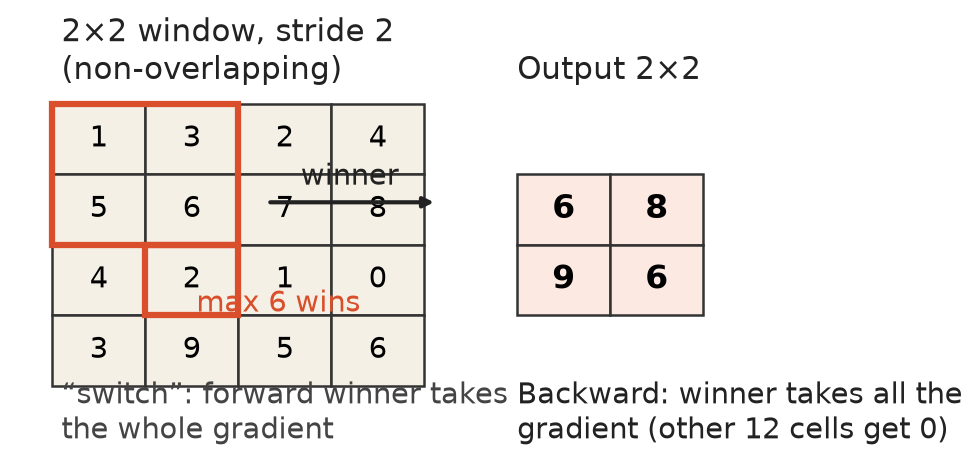

第 5 章 · 池化与上池化
卷积之后，特征图怎么变小
卷积负责提取特征。
池化把特征图变小，让网络看得更整。
门控卷积的遮罩由上一层自己学。
本集范围：池化、上池化、数字分类。
依据：原书第 295–299 页
本集路线
池化两件套
最大池化反传的开关
转置卷积与 U 形网络
LeNet-5 的银行应用
正课第三十九集
01 / 9
平均与最大 · 原书第 295 页
池化两件套：平均与最大
平均池化：窗口权重相同、加起来等于一。
窗口跳两步，特征图边长缩一半。
最大池化：取方形窗口里的最大响应。
常见 stride 2、2×2 不重叠或 3×3 重叠。
依据：原书第 295 页

max pooling：4×4 输入、2×2 窗口、胜者位红框｜程序生成，未用教材或论文原图
正课第三十九集
02 / 9
逻辑或 · 原书第 295 页
最大池化的两张脸
池化区域里一个单元点亮，输出就点亮。
这被想成一种逻辑或。
也被认为带来一些平移不变性。
多数网络没那么不变，性能会受损。
依据：原书第 295 页
提醒
Zhang 2019 讨论了这个问题
还给出简单的缓解建议
位置信息本身可能也是特征
正课第三十九集
03 / 9
反传 switch · 原书第 295 页
反传时那把开关
最大池化把某个输入单元转接到输出。
反传只把误差和导数给响应最大的单元。
前提是记住了当时哪个单元最大。
所以要额外记一张胜者位置表。
依据：原书第 295 页
上池化
最大上池化可近似逆转最大池化
可搭反卷积网络找最强刺激
Zeiler 和 Fergus 2014 年的工作
正课第三十九集
04 / 9
Lp 谱系 · 原书第 295 页
从平均到最大：Lp 家族
Lp 范数池化，p 推到无穷大就是取最大。
计算量更大，实践中用得不多。
偶尔用在最后一层：GeM 或 DAME。
步长卷积替代最大池化也有竞争力。
依据：原书第 295 页
趋势
新架构不再单设池化层
步长二卷积既降分辨率又学权重
最大池化仍是原生场景的默认值
正课第三十九集
05 / 9
转置卷积 · U-Net · 原书第 296–298 页
把图变大再组回去
转置卷积：先插全零行零列，再跑普通卷积。
步长在这里指定放大倍数。
降采样加升采样，能做多分辨率任务。
瓶颈之后，U-Net 用跳跃连接接回细节。
依据：原书第 296–298 页
多分辨率任务
像素级语义标注
图像去噪与超分辨率
单目深度推断、神经风格迁移
正课第三十九集
06 / 9
主干网络 · 原书第 298 页
主干网络的更多用途
去噪超分、单目深度、风格迁移还会见到。
输入输出都是图的任务，几乎都靠它打底。
压下去提语义，放大来回细节。
依据：原书第 298 页
关键词
瓶颈：中间最细
跳跃连接：细节抄近路
U 形结构反复出现
正课第三十九集
07 / 9
LeNet-5 应用史 · 原书第 298–299 页
第一代商业卷积网络
LeNet-5 是勒昆等人 1998 年的系统。
用 sigmoid、平均池化、高斯 RBF 输出。
1995 年前后由 AT&T 部署读支票。
一度处理全美 10% 到 20% 的支票。
依据：原书第 298–299 页
三件事
比 AlexNet 早十七年
当年首选是平均池化
真在银行系统里跑生产
正课第三十九集
08 / 9
资源·作业·下一集 · 原书第 299 页
资源、作业与下一站
LeNet-5 变体仍是教程里的第一个 CNN。
MNIST 之外，常用 CIFAR-10 或 Fashion MNIST。
卡帕西的浏览器演示可以在网页里跑。
作业：4×4 输入、2×2 窗口、步长 2，输出几乘几。
依据：原书第 299 页
下一集
AlexNet、VGG
GoogLeNet、ResNet
错误率从四分之一掉到百分之三点几
正课第三十九集
09 / 9